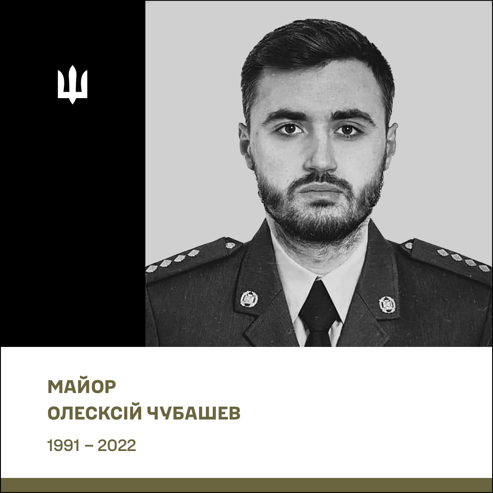
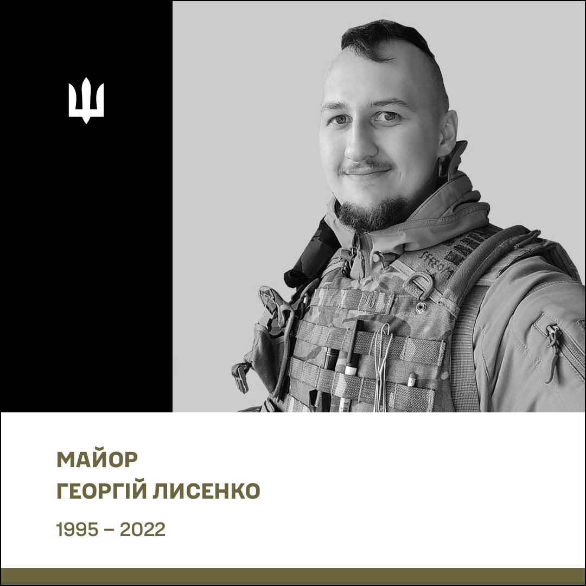
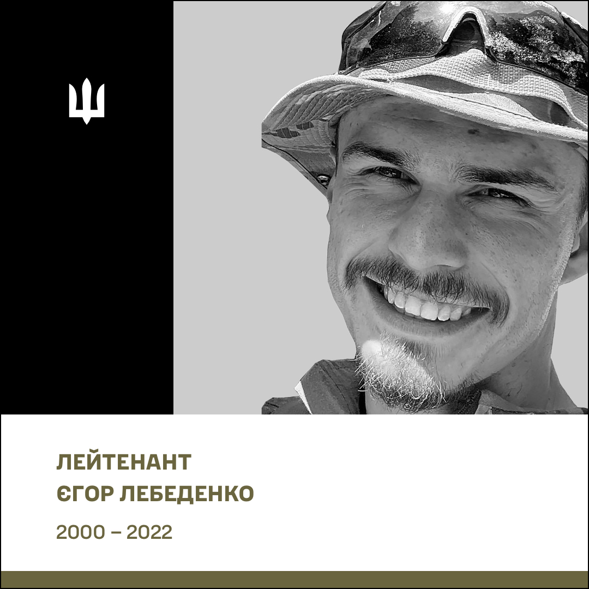

Військовий інститут Київського національного університету імені Тараса Шевченка
Міжвідомчий, багатопрофільний, інтегрований військовий навчальний підрозділ
провідного вищого навчального закладу України
ВІКНУ здійснює підготовку професіоналів з повною вищою освітою для:
Структура ВІКНУ
Керівництво
Військового інституту
Олексій Олександрович
Полковник
Військового інституту

Олексій Володимирович
Полковник
з навчальної роботи

Анатолій Анатолійович
Полковник
з наукової роботи

Борис Олексійович
Полковник
з тилу

Володимир Вікторович
Полковник
з озброєння

Олександр Вікторович
Полковник
Військового інституту

Максим Леонідович
Майстер-сержант
Військовий факультет соціальних та поведінкових наук
Кафедра створена в 1992 р. у складі факультету військово-фінансової підготовки. У 1997 р. відбувся перший набір курсантів за спеціальністю “Військова психологія”. Сьогодні кафедру очолює кандидат психологічних наук, доцент полковник Наталія МАСЬ. З метою вдосконалення професійної компетентності НПП кафедри систематично залучаються до психологічного супроводу військових, моніторингу ПТСР, проведення консультацій, участі в міжнародних тренінгах (США, Техас, Нью-Джерсі). Це дозволяє опановувати сучасні методи психодіагностики, кризової інтервенції та роботи з бойовим стресом — актуально в умовах воєнного стану.
З метою вдосконалення фахових компетентностей випускники першого (бакалаврського) та другого (магістерського) ступенів вищої освіти за спеціальність С4 “Психологія” систематично залучаються до процесів реінтеграції військовослужбовців, звільнених з полону російського агресора; до процесів надання психологічної підтримки військовослужбовцям та членам їхніх сімей на базах реабілітаційних центрів; до проведення заходів психологічного супроводу особового складу під час виконання завдань за призначенням.
При кафедрі функціонують:
- Кабінет функціональної діагностики обладнаний комп’ютерами, з виходом до мережі Інтернет із встановленими програми “Лідер”, “PSY-D” та “PSY- Professional”, що використовується з метою формування у здобувачів практичних навичок з психологічного діагностування за допомогою спеціальних програмних продуктів, рекомендованих замовником для проведення заходів професійно-психологічного добору у військах та поглибленого соціально-психологічного вивчення особового кладу до та після участі у бойових діях;
- Клас психологічної реабілітації оснащений електронними комплексами та для роботи з віртуальною реальністю – ноутбуками та VR-шоломами Meta Quest 2 128GB з преінстальованим ліцензійним програмним забезпеченням та курсом VR-відео, що дозволяє здобувачам освіти опановуватимуть техніки для удосконалення психологічної роботи у військах під час підготовки особового складу до бойових дій, психологічного супроводу під час виконання бойових завдань та відновлення особового складу після повернення з війни.
З 2023 року на кафедрі проводяться курси професійної військової освіти, а саме: “Фаховий курс тактичного рівня L-1В (ВПс)”, “Командний курс тактичного рівня L-1С (ВПс)” та “Базовий курс тактичного рівня L-1А та фаховий курс тактичного рівня L-1В (ВПс)”. З 2017 року кафедра забезпечує проведення курсів підвищення кваліфікації військових фахівців за відповідним напрямом.
У 2024 році науково-педагогічними працівниками кафедри розроблений онлайн-курс “Особливості роботи офіцера-психолога в умовах бойових дій” на платформі “PROMETHEUS”. В межах міжнародного співробітництва здобувачі освіти мають змогу слухати гостьові лекції та тренінги від відомих іноземних фахівців у сфері психології: від професора психології University of Miami (США), нейробіолога, доктора філософії Аміші ДЖА; від військового психолога Institute of Military Psychiatry University of Oslo (Норвегія) Тронда Івара ХЕГГЄ; від міжнародного тренера “Mindfulness Based Attention Training” Володимира ПАШКОВСЬКОГО тощо. А з 2019 року курсанти спеціальності С4“Психологія” приймають участь у некомерційній програмі Європейського союзу Еразмус, щодо обміну студентами та викладачами між університетами країн Євросоюзу.
Події останніх десяти років чітко продемонстрували необхідність посилення всіх напрямків розвитку ЗС України та інших підрозділів Сил оборони. Зокрема виникла гостра потреба посилення такого напрямку як соціальна робота з військовослужбовцями та членами їхніх родин. Важливим елементом формування нової системи соціального супроводу була організація підготовки фахівців відповідного напрямку. Завдяки спільній ініціативі начальника Головного управління морально-психологічного забезпечення та начальника Військового інституту КНУ ім. Т. Шевченка рішенням Міністра оборони України та Головнокомандувача ЗСУ в 2023 році на базі Військового інституту створено кафедру соціальної роботи у військах (силах) та розпочато підготовку фахівців за спеціальністю “Соціальна робота”. Основними завданнями майбутніх офіцерів буде організація та проведення заходів соціального супроводу, забезпечення реалізації соціальних прав та гарантій військовослужбовців, членів їх сімей, працівників ЗСУ; взаємодія з представниками територіальних центрів комплектування та соціальної підтримки, органами державної влади, місцевого самоврядування з питань сприяння у наданні адресної соціальної допомоги військовослужбовцям, які потребують додаткового соціального захисту, членам їхніх сімей, сім’ям військовослужбовців, які загинули, потрапили в полон, зникли безвісти.
НАВЧАЛЬНА РОБОТА
Освітня діяльність на кафедрі реалізується у вигляді навчально-виховного процесу, включає навчальну, виховну, методичну роботу та наукову і науково-технічну діяльність. Вона організовується відповідно до Положення про Військовий інститут та вимог навчальної частини Інституту. Основним видом діяльності Кафедри є навчальна робота. Вона організовується відповідно до Положення про Військовий інститут та вимог навчальної частини Інституту. Основні зусилля науково-педагогічних працівників кафедри спрямовані на:
- впровадження стандартів НАТО в освітній процес;
- вмінні застосовувати на практиці основні положення теорії соціальної роботи у військах (силах), у тому числі, за принципами NATO Social Services;
- підготовці майбутніх офіцерів, спроможних особисто надавати соціальну підтримку військовослужбовцям та членам їх родин у мирний та під час дії правового режиму воєнного стану;
- отриманні слухачами знань, необхідних для розуміння процесів планування, підготовки та реалізації управлінських рішень щодо соціального супроводу з урахуванням міжнародних стандартів та євроатлантичних процедур.
НАУКОВА РОБОТА
Науково-педагогічні працівники кафедри проводять наукові дослідження з наукової проблематики соціального захисту військовослужбовців та членів їх родин. НПП кафедри готують наукові статті, навчальні посібники, збірники документів, беруть участь в наукових заходах, які проводяться у Військовому інституті та університеті, а також на інших освітньо-наукових платформах. Молоді викладачі працюють над дисертаційними дослідженнями. Звітують про результати роботи на засіданнях кафедри. Курсанти залучаються до діяльності наукового гуртка, члени якого беруть участь в відомчих та міжнародних конференціях.
Одним з основних напрямів діяльності Військового інституту Київського національного університету імені Тараса Шевченка є формування нової генерації військових лідерів для Збройних Сил України та інших військових формувань сектору безпеки та оборони, майбутньої еліти держави. Кафедра поведінкових наук була створена та почала своє функціонування в жовтні 2023 року. Кафедра призначена для проведення освітньої діяльності з військово-професійної підготовки здобувачів освіти, а також участі у науковій діяльності, що спрямовані на забезпечення формування військових лідерів за принципами та стандартами НАТО під час освітнього процесу на тактичному рівні професійної військової освіти (L-1,) у курсантів (слухачів) Військового інституту.
Основними завданнями кафедри є:
- формування нового стилю військового лідерства та лідерської поведінки;
- формування та розвиток особистісних компетентностейвійськового лідера;
- формування професійної культури військового лідера на основі євроатлантичних принципів та національно-історичних традицій;
- формування знань в контексті філософії війни, історії війн та воєнного мистецтва;
- впровадження досвіду військового лідерства, набутого за час збройної агресії російської федерації проти України;
- формування логічного мислення, розкриття аналітичних здібностей та розуміння філософії, як фундаментальної науки, а також філософії війни;
- формування культури сприйняття, відтворення та поширення інформації.
Одним із напрямів діяльності Військового інституту Київського національного університету імені Тараса Шевченка є підготовка кваліфікованих військових фахівців за спеціальністю С2 “Політологія” для Збройних Сил України та інших військових формувань сектору безпеки та оборони. Знання, які отримують випускники кафедри забезпечують глибоке розуміння політичних аспектів військової справи, сприяє розробці ефективних стратегій та прийняттю обґрунтованих рішень. Використовуючи знання воєнної політології, військові лідери можуть краще орієнтуватися у складних політичних ситуаціях, прогнозувати майбутні загрози та забезпечувати надійний захист держави. Базову освіту майбутні військові політологи здобувають на філософському факультеті Київського національного університету імені Тараса Шевченка.
Кафедра військової політології у складі Військового інституту створена 18 жовтня 2018 року на підставі спільної директиви Міністерства оборони та Генерального штабу ЗС України від 6 жовтня 2018 року.
Укомплектування кафедри науково-педагогічним складом розпочато 7 грудня 2018 року. З 16 січня 2019 року кафедра розпочала свою роботу. 1 жовтня 2023 року кафедра увійшла до складу військового факультету соціальних та поведінкових наук.
З метою передачі бойового досвіду здобувачам освіти, науково-педагогічні працівники кафедри постійно беруть участь у заходах із забезпечення національної безпеки й оборони, відсічі й стримування збройної агресії російської федерації.
З 2019 року науково-педагогічний склад кафедри та курсанти спеціальності “Політологія” беруть участь програмі Еразмус+, щодо обміну студентами та викладачами між університетами країн Євросоюзу.
З 2023 року науково-педагогічний склад кафедри та курсанти спеціальності “Політологія” беруть участь у програмі НАТО DEEP, що спрямована на зміцнення системи військової освіти країн-партнерів Альянсу, підвищення стандартів військової освіти, зокрема, шляхом реформування навчальних програм, впровадження сучасних методів навчання, а також професійного розвитку викладацького складу.
Військовий факультет міжнародних відносин та права
Кафедра військового права є структурним підрозділом військового факультету міжнародних відносин та права Військового інституту Київського національного університету імені Тараса Шевченка, головним завданням якого є підготовка в інтересах Збройних Сил України офіцерів тактичного рівня за напрямом підготовки D8 “Право”.
Навчання курсантів проводиться на базі:
- Військового інституту, де кафедра забезпечує викладання загальноправових та військово-правових дисциплін;
- Навчально-наукового інституту права Київського національного університету імені Тараса Шевченка з повним залученням його наукового та навчально-матеріального потенціалу.
Інтегроване навчання обумовлює високу якість освіти, забезпечує здобуття глибоких і ґрунтовних базових знань тими, хто навчається, формує готовність випускників стояти на варті законності та правопорядку у Збройних Силах України.
До навчального процесу залучаються представники Військової служби правопорядку у Збройних Силах України, Центрального управління цивільно-військового співробітництва Генерального штабу Збройних Сил України, юридичної служби Збройних Силах України, волонтерських та громадських організацій України, делегації Міжнародного Комітету Червоного Хреста, Датської Ради у справах біженців в Україні, місії ООН з прав людини, Центру з питань захисту цивільного населення у збройних конфліктах, Координаційного центру з надання правової допомоги, Регіонального центру прав людини та інші.
Освітньо-професійні програми, за якими здійснюється підготовка на кафедрі:
-
Замовник - Головне
управління Військової служби правопорядку Збройних Сил України
- Освітній рівень "Бакалавр": "Правоохоронна діяльність в Збройних Силах України";
- Освітній рівень "Магістр": "Організація правозастосовної діяльності в Збройних Силах України".
-
Замовник – Центральне
управління
цивільно-військового співробітництва Генерального штабу Збройних Сил
України
- Освітній рівень "Бакалавр": "Цивільно-військові відносини";
За час свого існування кафедра підготувала більше тисячі фахівців, абсолютна більшість з яких проходить військову службу на юридичних посадах в структурах Міністерства оборони України, Збройних Сил України, інших військових формуваннях, розвідувальних та правоохоронних органах України.
Внаслідок реорганізації кафедри військового перекладу та спеціальної мовної підготовки наприкінці 2018 року та з метою оптимізації вивчення англійської мови курсантами немовних спеціальностей було утворено кафедру спеціальної мовної підготовки (кафедра що забезпечує).
Основні завдання
- організація та проведення освітньої, методичної та наукової діяльності для забезпечення викладання англійської мови курсантам немовних спеціальностей, які виконують освітньо-професійні програми підготовки фахівців ступенів вищої освіти «бакалавр» та «магістр» за спеціальностями C2 Політологія; C4 Психологія; C7 Журналістика; D2 Фінанси, банківська справа, страхування та фондовий ринок; D8 Право; G18 Геодезія та землеустрій.
- проведення мовного тестування та видача сертифіката відповідно до стандарту НАТО СТАНАГ – 6001 з метою визначення рівня сформованості навичок і вмінь курсантів із чотирьох базових видів мовленнєвої діяльності, а саме: аудіювання, говоріння, читання та письма.
Дисципліни кафедри
- Іноземна мова (загальний, загальновійськовий та спеціальний курс);
- Інтенсивний мовний курс за напрямом Military Police;
- ">Іноземна мова в професійній діяльності.
Кафедра військового перекладу бере початок від Циклу військового перекладу, заснованого в Київському університеті у 1949 році.
Навчальна робота на кафедрі організована відповідно до затверджених та акредитованих Національним агентством із забезпечення якості вищої освіти освітньо-професійних програм за спеціальністю В11 “Філологія” за першим (бакалаврським) та другим (магістерським) рівнями вищої освіти. На сьогодні кафедра є єдиним підрозділом у Збройних Силах України, який здійснює підготовку військових фахівців тактичного рівня з вищою освітою за спеціальністю В11 “Філологія”, спеціалізацією “Військовий переклад”. Курсанти вивчають англійську, німецьку, французьку мови. Кафедра здійснює підготовку:
- за освітнім ступенем “бакалавр” за спеціальністю В11 “Філологія”, освітньою програмою “Військовий переклад”, 240 кредитів ЄКТС, термін навчання 4 роки. Після завершення навчання курсанти здобувають вищу освіту першого рівня та диплом бакалавра “Філології” зі спеціальності В11 “Філологія”, офіцер управління тактичного рівня;
- за освітнім ступенем “магістр”, освітньою програмою “Лінгвістичне забезпечення військ”, 90 кредитів ЄКТС, термін навчання 1 рік та 5 місяців. Після навчання слухачі здобувають вищу освіту другого рівня та диплом магістра “Філології” зі спеціальності В11 “Філологія”, спеціалізація “Лінгвістичне забезпечення військ”, професійну кваліфікацію “Перекладач (двох іноземних мов), офіцер управління тактичного рівня”;
- наукових кадрів, спільно з лінгвістичним науково-дослідним управлінням Військового інституту, на здобуття наукового ступеня доктора філософії зі спеціальності – В11 “Філологія” (Перекладознавство);
- перепідготовку та підвищення кваліфікації осіб офіцерського складу та військової підготовки для сержантського складу з вищою освітою зі спеціальності “Військовий переклад”;
- курси підвищення кваліфікації з питань удосконалення навичок письмового та усного перекладу, володіння військово-спеціальною термінологією ВСТ-ОР та військово-технічною термінологією ВТТ-ОР (англійська мова);
- викладання навчальних дисциплін “Основи військового перекладу” та “Воєнно-політичний переклад” курсантам зі спеціальності С3 “Міжнародні відносини” кафедри інформаційно-аналітичних технологій, в якості кафедри, що забезпечує;
- перекладацький супровід заходів військового співробітництва Збройних Сил України (за рішенням Міністра оборони України, Головнокомандувача ЗСУ, Командувача Сухопутних військ ЗСУ, НВІ).
Кафедра викладає 10 авторських унікальних навчальних дисциплін на першому (бакалаврському) рівні вищої освіти та 8 на другому (магістерському) рівні вищої освіти.
Теоретичні знання, починаючи з 2 курсу, курсанти-перекладачі закріплюють під час перекладацького супроводу різноманітних заходів військового співробітництва Збройних Сил України серед яких: підготовка підрозділів Збройних Сил України, багатонаціональні навчання, різноманітні командно-штабні курси, конференції, міжнародні спеціалізовані виставки, робочі зустрічі тощо.
Військову практику та військове стажування курсанти проходять в департаментах Міністерства оборони України та управліннях Генерального штабу Збройних Сил України, які здійснюють міжнародне співробітництво з відповідними військовими установами збройних сил держав-членів НАТО, країн-партнерів і міжнародними організаціями за воєнно-політичним, військово-технічним, військовим та іншими напрямами.
Крім того, курсанти за спеціальністю В11 “Філологія” виконують термінові позапланові практичні завдання, пов’язані із лінгвістичним забезпеченням заходів міжнародного співробітництва інших складових сектору безпеки та оборони України.
Кафедра здійснює підготовку військових фахівців тактичного рівня за спеціальністю “Міжнародні відносини” за двома спеціалізаціями:
- Міжнародні відносини у воєнній сфері
- Міжнародне співробітництво у сфері оборони та воєнній сфері
Підготовка військових фахівців в обсязі нормативної частини навчального плану здійснюється на базі Навчально-наукового інституту міжнародних відносин Київського національного університету імені Тараса Шевченка
Військово-професійна та військово-спеціальна підготовка організована у Військовому інституті, де курсанти отримують військово-теоретичні знання та набувають практичні навички виконання обов’язків на первинних посадах в органах військового управління, військових частинах, закладах та установах Збройних Сил України.
Випускники кафедри проходять військову службу на посадах офіцерів інформаційно-аналітичних підрозділів, підрозділів інформаційних технологій, міжнародного співробітництва в органах військового управління, військових частинах, закладах та установах Збройних Сил України.
Науково-педагогічні працівники кафедри спрямовують свої зусилля на впровадження активних методів навчання, підвищення рівня методичної майстерності, вдосконалення навчально-методичної бази, проведення наукових досліджень.
Навчально-матеріальне забезпечення кафедри реалізовано шляхом інтеграції бази Військового інституту та Інституту міжнародних відносин КНУ імені Тараса Шевченка. Навчально-матеріальна база даного напряму повністю забезпечує потреби навчального процесу, створює можливість подальшого розвитку кафедри й загалом Військового інституту в напрямі інтеграції до європейського та світового освітнього простору.
Військовий факультет сил підтримки та забезпечення
Кафедра фінансового забезпечення військ (далі – Кафедра) створена в 1994 році як перша кафедра фінансово-економічного напряму для підготовки офіцерів-фінансистів для Збройних Сил України та інших військових формувань. Вже протягом 30 років на кафедрі курсанти вивчають теорію і практику організації фінансового забезпечення у військових частинах як в мирний час так і в умовах режиму воєнного стану.
Кафедра підпорядкована начальнику військового факультету сил підтримки та забезпечення Військового інституту Київського національного університету імені Тараса Шевченка. Станом на сьогодні кафедра готує фахівців за спеціальностями:
- D1 Облік і оподаткування
- D2 Фінанси, банківська справа, страхування та фондовий ринок
Підготовка фахівців за обома спеціальностями проводиться для фінансових органів Збройних Сил України й інших військових формувань України. Крім того, на кафедрі проводяться численні курси підвищення кваліфікації фахівців фінансових органів як існуючих військових частин так і новостворених після повномасштабного вторгнення російської федерації на територію України.
Кафедра фінансового забезпечення військ Військового інституту Київського національного університету імені Тараса Шевченка призначена для здійснення освітньої, методичної та наукової діяльності з військово-професійної підготовки курсантів (слухачів) чи міжгалузевою групою спеціальностей, у тому числі з підготовки науково-педагогічних працівників, а також підвищення кваліфікації військових фахівців.
Кафедра здійснює підготовку курсантів, слухачів, ад’юнктів для подальшої служби на посадах офіцерського або начальницького складу для задоволення потреб Збройних Сил України, Національної гвардії України, Державної прикордонної служби України та інших утворених відповідно до законів України військових формувань.
Кафедра автомобільної підготовки з 1994 року надає майбутнім офіцерам усіх спеціальностей інституту теоретичні та практичні знання вмілого володіння автомобільною технікою різних типів.
Основні зусилля науково-педагогічних працівників кафедри спрямовані на:
- Навчання курсантів будови та експлуатації військової автомобільної техніки, у тому числі із використанням сучасних мультимедійних тренажерів;
- Засвоєння знань правил дорожнього руху, основ керування автомобілем та безпеки руху, надання першої медичної допомоги;
- Надання інструкторської допомоги під час набуття практичних навичок водіння у різних умовах місцевості, пори року та доби, а також навчанні долати природні та штучні перешкоди на автомобільній техніці різних видів;
- Набуття навичок водіння автомобіля в обсязі вимог класної кваліфікації водія категорій «В», «С» на підставі Сертифіката про державну акредитацію (серія МВС № 000282 від 23.09.16, виданого Міністерством внутрішніх справ України);
- Набуття знань загальної будови, порядку і правил експлуатації, а також бойових можливостей бронетанкової та іншої автомобільної техніки;
- Можливість курсантів вдосконалювати теоретичні знання у спеціалізованих класах з вивчення ПДР та будови основних зразків військової техніки.
Наукова робота
- НПП кафедри є розробниками методичної літератури відповідно до сучасних умов експлуатації автомобільної техніки у бойових умовах (з урахуванням досвіду ООС (АТО) та подій повномасштабного вторгнення 2022-2025);
- Участь курсантів у військово-науковому товаристві інституту за напрямком діяльності кафедри.
З набуттям Україною незалежності, у 1993 році було прийнято рішення цивільну картографічну освіту взяти за базову та організувати підготовку військових фахівців за напрямом підготовки "Геодезія, картографія та землеустрій" освітнього рівня "бакалавр" на базі Відділення військової підготовки Київського національного університету.
На даний час кафедра геоінформаційних систем і технологій (ГІСТ) здійснює підготовку військових фахівців за спеціальністю "Геодезія та землеустрій", спеціалізацією "Геоінформаційні системи і технології", освітньою програмою "Геоінформаційні системи і технології".
Перший набір курсантів за цим фахом було здійснено Відділенням військової підготовки разом з географічним факультетом Київського національного університету імені Тараса Шевченка в 1993 році згідно зі спільним наказом Міністра оборони та Міністра освіти України № 39/1 від 16 травня 1993 року. За місяць до цього в складі першого факультету Відділення військової підготовки КНУ була створена кафедра картографії (з 2002 року – кафедра топогеодезичного та навігаційного забезпечення військ, з 2013 року – кафедра топогеодезичного забезпечення, з 2017 року – кафедра геоінформаційних систем і технологій). 16 травня 1993 року і став Днем народження кафедри.
Профільна за фахом підготовка здійснюється кафедрою геоінформаційних систем і технологій Військового інституту шляхом викладання наступних навчальних дисциплін: “Актуальні аспекти геопросторової підтримки в сучасних умовах”, “Геопросторова підтримка військ”, “Основи навігаційного забезпечення військ”, “Геопросторова розвідка”, “Спеціальні карти та фотодокументи ”, “Військова топографія” та інші.
Навчально-матеріальна база підготовки військових фахівців реалізована шляхом інтеграції баз Військового інституту, географічного факультету Київського національного університету та військових частин топографічної служби ЗСУ. Дана база цілком забезпечує освітній процес і включає:
- Лабораторію цифрової фотограмметрії з сучасними, на рівні кращих світових зразків, цифровими фотограмметричними станціями “Дельта”, фотограмметричний сканер із роздільною здатністю 8 мкм формату 300х300 мм, планшетний сканер формату А1, фотограмметричний плотер формату А1 з роздільною здатністю 600 DPI;
- Геодезичний та картографічний класи;
- Клас військової топографії;
- Клас геоінформаційних систем і технологій;
- Клас геопросторової підтримки;
- Дві науково-дослідні лабораторії, обладнані електронно - обчислювальною технікою для проведення досліджень у галузі комп’ютерного дизайну, геоінформаційного картографування, телекомунікаційної картографії тощо.
Кафедра військової журналістики з 31 серпня 2015 року готує фахівців інформаційно-медійного забезпечення військ (сил) за спеціальністю "Військова журналістика". З вересня 2025 року кафедра розпочинає підготовку за спеціалізацією "Зв’язки з громадськістю у збройних силах". Основа практичної підготовки базується на досвіді медійного супроводу сектору безпеки та оборони України під час широкомасштабного вторгнення та періоду АТО/ООС.
Основними завданнями кафедри з навчальної і методичної роботи є:
- організація та проведення навчального процесу військових журналістів та фахівців зі зв`язків з громадськістю;
- розробка методичних та наочних матеріалів з урахуванням бойового досвіду та сучасних трендів інформаційної діяльності;
- проведення практичних занять, військового стажування та практики на базі інформаційно-медійних структур;
- набуття і вдосконалення практичних навичок під час створення контенту для сайту та фейсбук-сторінки інституту, а також друкованих та візуальних матеріалів;
- випуск власного видання "Універсант times", Першого курсантського радіо, виготовлення медіа-контенту для соціальних мереж Інституту;
- проведення курсів підвищення кваліфікації з питань інформування громадськості та взаємодії із медіа;
- участь науково-педагогічних працівників та курсантів у міжнародних програмах Erazmus+ та DEEP;
- залученість ад’юнктів, які навчаються за спеціальністю C7 «Журналістика» до освітньої та науково-практичної роботи кафедри.
Програма «Звʼязки з громадськістю у збройних силах» передбачає підготовку офіцерів тактичного рівня підрозділів комунікацій Збройних Сил України.
Підготовка на кафедрі військової журналістики спрямована на практичному опануванні навичок:
- інформування громадськості щодо діяльності Збройних Сил України;
- налагодження ефективної системи комунікації з суспільством та медіа;
- реалізації інформаційної політики Збройних Сил України;
- формування позитивного іміджу військових в інформаційному та суспільному середовищі;
- моніторингу інформаційного простору;
- протидії фейкам ворожої пропаганди.
До складу кафедри входить навчально-тренувальний комплекс. Це сучасна теле-радіо студія обладнана якісною апаратурою та технікою для відпрацювання практичних занять із курсантами-журналістами. Навчально-тренувальний комплекс облаштований відеокамерами сучасного студійного зразка, відео-суфлером, освітленням та локацією для зйомки, режисерським пультом, студією звукозапису та усім необхідним компʼютерним забезпеченням для монтажу, обробки фото, відео та аудіо. Комплекс дозволяє одночасно працювати команді із 10-тьох курсантів - паралельно професійно записувати звук, музику, проводити відеозйомки, монтувати. Також на базі НТК є портативна техніка для виїзних мобільних зйомок на різних локаціях.
Факультет післядипломної освіти
Кафедра є сучасним, навчальним підрозділом, спроможним впроваджувати та реалізовувати новітні технології навчання, методику і практику підготовки та застосування підрозділів на основі бойового досвіду ЗС України для підготовки офіцерів тактичного рівня.
Основні зусилля науково-педагогічних працівників кафедри спрямовані на:
- Формуванні військово-професійної компетентності офіцера тактичного рівня;
- Розвитку та удосконалення практичних навичок із загальновійськової підготовки;
- Підтримуванні сформованих вмінь в управлінні підрозділами під час підготовки та в ході бою;
- Вихованні особистої відповідальності за прийняті рішення;
Кафедра забезпечує проведення дисциплін
- Загальна тактика
- Стрілецька зброя та вогнева підготовка
- Радіаційний хімічний біологічний захист
- Інженерна підготовка
- Підготовка зі зв’язку
- Бойова система виживання воїна
- Розвідувальна підготовка
- Основи застосування безпілотних систем тактичного класу
Матеріально-технічна база
- Стрілецький тир для проведення практичних стрільб зі стрілецької зброї
- Клас бойового забезпечення, що дозволяє вивчити сучасні зразки засобів зв’язку та інженерних боєприпасів
- Клас симуляції тактики сучасного броньованого бою “STEEL BEASTS”, що дозволяє створювати комп’ютерну віртуальну симуляцію бронетанкового та механізованого бою з акцентом на перспективу малих підрозділів. Він моделює всі тактичні рівні аж до кількох посилених рот
- Комплекс програмно-апаратного забезпечення LASERTAG для проведення підготовки військовослужбовців з відпрацювання варіантів тактичних дій в основних видах бою
- Засоби страйкбольного обладнання для проведення підготовки військовослужбовців з відпрацювання варіантів тактичних дій в основних видах бою
За час існування кафедри її фахівцями було підготовлено низку спортсменів вищої кваліфікації, зокрема: 2 майстри спорту міжнародного класу, понад 25 майстрів спорту України (гирьовий спорт, сучасне військове п’ятиборство, поліатлон, бокс, військово-спортивне багатоборство тощо), понад 100 кандидатів у майстри спорту України. Збірні команди Військового інституту ставали багаторазовими Чемпіонами та призерами змагань серед вищих військових навчальних закладів з різних видів спорту.
За останні роки на кафедрі фізичного виховання, спеціальної фізичної підготовки і спорту можна відмітити низку спортивних досягнень:
- У 2023 році кафедра фізичного виховання, спеціальної фізичної підготовки і спорту підготовила чемпіонку Світу та Європи з гирьового спорту серед дорослих, юніорів.
- У 2024 році збірна Військового інституту взяла участь у чемпіонаті ЗС України серед ВВНЗ з гирьового спорту у яких вперше в історії Військового інституту виборола срібло.
- У 2025 році збірна Військового інституту взяла участь у чемпіонаті ЗС України серед ВВНЗ з гирьового спорту та в котре продемонструвала свою спортивну майстерність та виборола срібло.
Щорічно кафедра організовує і проводить змагання спартакіади Військового інституту. Найбільш підготовлені курсанти приймають участь у Всеукраїнських та міжнародних змаганнях.
Сьогодні на кафедрі сформовано 8 секцій:
- Гирьовий спорт
- Бокс
- Регбі
- Рукопашний бій
- Спортивне орієнтування
- Міні футбол
- Легка атлетика
- Армрестлінг
Кафедра фізичного виховання, спеціальної фізичної підготовки і спорту підрозділ факультету післядипломної освіти Військового інституту, на який покладається:
- організація i проведення з курсантами теоретичних, практичних занять та консультацій; забезпечення самостійної роботи з фізичного виховання, спеціальної фізичної підготовки; прийом заліків та екзаменів;
- організація інструкторсько-методичних i показових занять з фізичного виховання, спеціальної фізичної підготовки;
- надання методичної допомоги командирам (начальникам) в організації та проведенні практичних занять з фізичної підготовки;
- розробка завдань з фізичного виховання, спеціальної фізичної підготовки для курсантів на період військового стажування (практики);
- проведення науково-дослідної роботи i заходів щодо підвищення науково-методичної кваліфікації науково-педагогічних працівників кафедри фізичного виховання, спеціальної фізичної підготовки i спорту;
- організація та проведення військово-наукової роботи з курсантами щодо питань фізичного виховання, спеціальної фізичної підготовки і спорту;
- організація навчально-тренувального процесу зі спортивними командами (робота спортивних секцій), організація і проведення спортивних і військово-спортивних змагань;
- удосконалення навчально-матеріальної бази з фізичної підготовки і спорту.
До складу навчально-тренувального комплексу кафедри входить:
- гімнастичне містечко;
- спортивні майданчики для спортивних ігор;
- дистанція прискореного пересування;
- тренажерна зала.
В ці непрості часи війни разом з українським військом військові капелани перебувають на передовій боротьби за наше майбутнє. Служіння військового капелана є відповідальним і непростим, адже його основне призначення бути поруч із військовослужбовцем та формувати духовну стійкість воїна.
Враховуючи вищезазначене, в другій половині 2023 року рішенням Головнокомандувача Збройних Сил України в складі Військового інституту Київського національного університету імені Тараса Шевченка був створений Центр підготовки військових капеланів який на цей час є єдиним навчальним підрозділом що здійснює підготовку військових капеланів та помічників військових капеланів для Збройних Сил України.
Девізом центру є вислів "IN VARIETATE CONCORDIA" що в перекладі означає "ЄДИНІ У РІЗНОМАНІТТІ", адже центр готує капеланів з різних релігійних організацій України для всіх видів та родів Збройних Сил України.
Освітня діяльність у Центрі реалізується у вигляді навчально-виховного процесу, включає навчальну, виховну, методичну роботу та наукову і науково-технічну діяльність. Вона організовується відповідно до Положення про Військовий інститут та вимог навчальної частини Інституту.
Основним видом діяльності Центру є навчальна робота. Вона організовується відповідно до Положення про Військовий інститут та вимог навчальної частини Інституту.
Центр інтенсивної мовної підготовки створено в серпні 2003 року на базі курсів іноземних мов, які були засновані в 1994 році на Відділенні військової підготовки Київського університету імені Тараса Шевченка з метою прискореної допідготовки з англійської мови офіцерів ЗС України, що планувалися до призначення до складу багатонаціональних штабів і миротворчих підрозділів. Офіційно курси були закріплені при кафедрі іноземних мов з введенням в дію Тимчасового Положення про постійно діючі курси іноземних мов у Збройних Силах України (наказ Міністра оборони України від 14.08.1995 р. № 194). Восени 2000 року курси іноземних мов в якості структурного підрозділу увійшли до складу факультету іноземних мов та військового перекладу Військового інституту Київського національного університету імені Тараса Шевченка. З вересня 2017 року центр інтенсивної мовної підготовки входить до складу факультету післядипломної освіти.
Всього з початку функціонування курсів іноземних мов підготовку на них пройшли понад 5000 військовослужбовці і працівники Збройних Сил та співробітники інших силових структур України.
Метою діяльності центру інтенсивної мовної підготовки, відповідно до Дорожньої карти вдосконалення мовної підготовки у Збройних Сил України (на 2021-2025 роки) затвердженої Міністром оборони України 01.03.2021, є забезпечення (швидке нарощування чисельності особового складу з рівнем знання іноземних мов) досягнення знань іноземної мови на рівні не нижче СМР-2 “Функціональний” за стандартом НАТО СТАНАГ 6001 особами офіцерського, сержантського складу та працівниками ЗСУ в обсягах необхідних для забезпечення такою мовної сумісності, впровадження політик та стандартів НАТО в діяльність усіх ланок органів військового управління та повсякденної діяльності ЗСУ, участі у заходах міжнародного оборонного та військового співробітництва.
На сучасному етапі діяльність центру інтенсивної мовної підготовки регламентується Інструкцією про курси іноземних мов у Збройних Силах України, затвердженою наказом Міністерства оборони України від 23.05.2017 № 286.
Набір слухачів на навчання в центрі інтенсивної мовної підготовки здійснюється двічі на рік на підставі наказу Міністерства оборони України “Про прийом слухачів на курси іноземних мов у Збройних Силах України”. Цикл навчання на курсах у групах з вивчення англійської, німецької та французької мов триває 4 місяці. Навчання іноземних мов у центрі здійснюється за сучасними інтенсивними методиками, які дозволяють за короткий термін удосконалити знання слухачами іноземної мови в обсязі, достатньому для подальшого навчання за кордоном або самостійного виконання функціональних обов’язків в іншомовному середовищі.
Система мовної підготовки центру інтенсивної мовної підготовки базується на державних освітніх стандартах та враховує мовні стандарти НАТО «STANAG» 6001.
Усі науково-педагогічні працівники центру з метою підвищення методичної майстерності періодично проходять стажування у провідних мовних закладах США, Великої Британії, Німеччини, Франції та інших країн.
Центр налічує 4 цифрові лінгафонні лабораторії, у 3-х встановлено програмне забезпечення “NIBELUNG”, що перетворює комп’ютерний клас в інтерактивне мультимедійне середовище з розширеними можливостями лінгафонної лабораторії. Це унікальні лінгафонні лабораторії, які поєднують найсучасніші цифрові технології для управління мультимедійними та інтернет-ресурсами для високоефективного навчання іноземним мовам; розвитку мови; навчання комп’ютерним технологіям; навчання усному послідовному, двосторонньому (навіть синхронному) та письмову перекладу; проведення презентацій; управління комп’ютерним класом. Вищезазначені лінгафонні лабораторії дозволяють викладачеві максимально ефективно використовувати навчальний час і надавати імпульс процесу навчання; збагатити навчальні заняття мультимедійним вмістом без необхідності використовувати додаткове обладнання; надають слухачам курсів іноземних мов більше матеріалу для вивчення і розширюють вибір матеріалів для самостійної роботи; дозволяють спілкуватися з викладачем, не турбуючи інших; забезпечують викладачеві необхідні інструменти для ефективного інтерактивного спілкування з курсантами та слухачами (передача коротких повідомлень, чат-сесії, прослуховування, діалог); завдяки оновленням через Інтернет, завжди залишається сучасним і універсальним засобом навчання і втіленням побажань викладачів.

Науково-дослідний центр
Науково-дослідний центр є науковим структурним підрозділом Військового інституту Київського національного університету імені Тараса Шевченка, який проводить дослідження у сферах, що відповідають напрямам його діяльності.
Центр призначений для проведення наукових досліджень в інтересах Збройних Сил України, Міністерства оборони України, інших міністерств і відомств та Київського національного університету імені Тараса Шевченка за напрямами діяльності НДЦ.
Наукові дослідження НДЦ проводить самостійно та у взаємодії з підрозділами Військового інституту, структурними підрозділами Міністерства оборони України та Генерального штабу Збройних Сил України, командуваннями видів Збройних Сил України, науковими установами (підрозділами), вищими військовими навчальними закладами та військовими навчальними підрозділами закладів вищої освіти тощо.
Основними напрямами діяльності та завдання науково-дослідного центру є:
- Геоінформаційні технології, військова географія, геодезія, картографія та топографія;
- Інформаційна та військово-технічна безпека держави, зокрема у сфері кібербезпеки;
- Інформаційно-психологічне протиборство у військовій сфері, зокрема у сфері кібербезпеки;
- Створення та впровадження інформаційно-технологічних систем, програмно-апаратних комплексів і засобів кібербезпеки, прогнозування розвитку обстановки у військовій сфері, пов’язаної з кіберзагрозами та кіберпростором;
- Права, що регулюють воєнну сферу;
- Освітня діяльність, новітні методи навчання, військова педагогіка і психологія;
- Військова термінологія та лексикографія;
- Військово-географічна (військово-країнознавча) та інформаційно-аналітична діяльність Збройних Сил України;
- Міжнародне військове співробітництво та трансфер технологій;
На щиті


